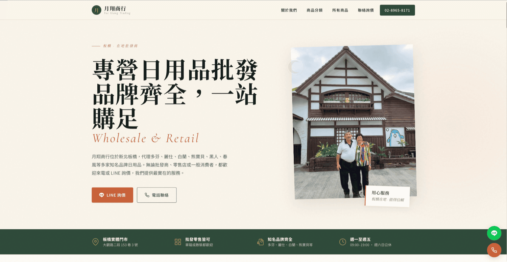
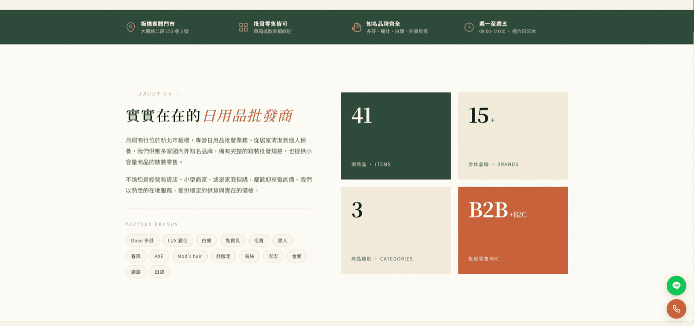

01 — 專案背景
實實在在的老店，需要被新客戶找到
月翔商行位於新北板橋，專營日用品批發，代理多芬、麗仕、白蘭、熊寶貝、黑人、春風等多家知名品牌。多年來生意靠的是實在的價格與熟客口碑——但這也意味著，不認識他們的人，幾乎沒有管道找到他們。
新客想知道「你們有代理哪些品牌？」「有沒有我要的商品？」「可以散裝零售嗎？」，只能打電話問。這些問題其實都可以在官網上一次回答清楚，把詢問門檻降到最低。
專案核心：批發商的官網不是形象櫥窗，而是詢價的第一站——商品要查得到、品牌要看得清、要詢價時一鍵就能聯絡上。
02 — 問題與痛點
口碑生意的天花板，就在「找不到」這三個字
痛點 1代理的品牌與商品品項完全沒有線上資訊，新客搜尋不到，只能靠人介紹才知道有這家店。
痛點 2「可不可以散裝買？」「一般人可以買嗎？」這類問題每天用電話重複回答，佔用營業時間。
痛點 3批發客與一般消費者的需求不同，卻沒有分別引導的管道，詢價入口單一且不明確。
03 — 解法與設計思路
把電話裡的答案，搬到官網上一次講清楚
先把客人最常問的問題整理出來，直接轉成網站的資訊架構：關於我們、商品分類、所有商品、聯絡詢價——一路看下來，客人的疑問自然被解答。
視覺上以沉穩的墨綠搭配磚橘，配上實體門市與老闆的照片，傳達在地老店的實在感與信任感；同時放上 41 項商品、15+ 合作品牌、B2B+B2C 等具體數字，讓專業度一眼可見。


HTMLCSSJavaScriptRWDBrand DesignLINE 導流
04 — 我的負責範圍
從需求訪談到上線部署，一人全程負責
- 1與月翔商行訪談，釐清代理品牌、商品品項、客群結構與最常被問到的問題
- 2規劃資訊架構——關於我們、商品分類、所有商品、聯絡詢價，依客人的疑問順序排列
- 3設計品牌視覺——墨綠與磚橘的配色、中文襯線字體，呈現老店的沉穩與信任感
- 4整理並上架商品資料與合作品牌清單，讓商品線上可查
- 5設計 LINE 詢價與一鍵撥號雙入口，並加上常駐浮動按鈕
- 6RWD 響應式開發與測試，部署上線
05 — 設計重點
為批發生意量身設計的三個關鍵
設計重點兩種客群，一個網站：批發商要看品項與箱裝規格，一般消費者關心能不能散買。網站同時服務兩者，文案明講「批發零售皆可、單箱或散裝都歡迎」，直接消除猶豫。
設計重點詢價零阻力：LINE 詢價與電話聯絡做成常駐浮動按鈕，不論滑到哪一段，想問就能立刻問——批發生意的成交往往就發生在那通電話。
設計重點用真實建立信任：實體門市照片、老闆本人、明確地址與營業時間、具體的品牌與商品數字——批發生意講的是可靠，網站也該傳達同一件事。
06 — 專案成果 / 價值
從「要有人介紹」到「自己找得到」
品牌成果
官網上線後，月翔商行有了可以主動分享的線上門面。新客能搜尋到、能自己查商品與品牌、能直接 LINE 詢價，不必再靠人介紹；重複的電話問答也大幅減少，實體門市的時間可以留給真正的生意。
後續延伸：網站架構可持續擴充——線上型錄、報價單下載、常見問答，甚至簡易的線上下單，都能在現有基礎上直接加入。